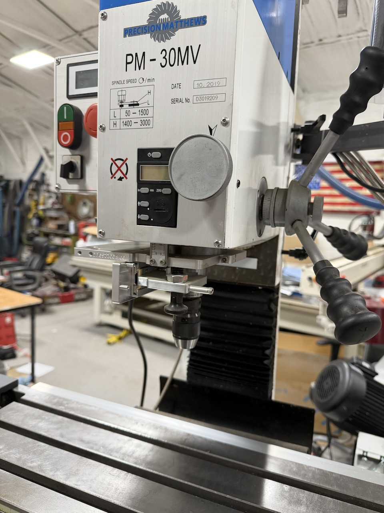
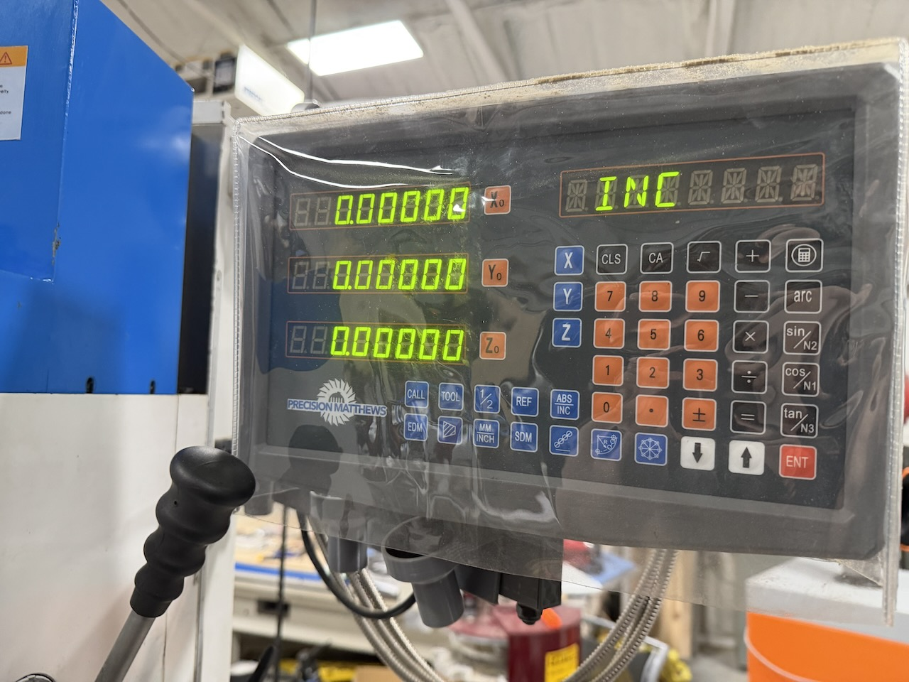
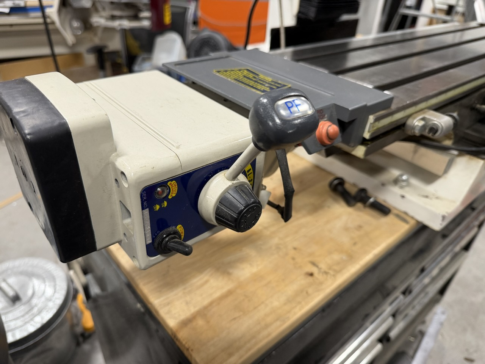

Precision Matthews PM-30MV Benchtop Mill — 3-Axis DRO, Known Z-Axis Issue
$2,000




Description
Up for sale is a Precision Matthews PM-30MV benchtop mill with 3-axis DRO installed and functional. This is a well-regarded machine from a reputable U.S. dealer — parts and support are readily available. Great for the home machinist, small shop, or hobby CNC conversion project.
One known issue is fully disclosed below: the Z-axis (head up/down on column) does not move smoothly and likely needs adjustment, cleaning, or lubrication. Someone mechanically inclined should be able to sort it out. It does not affect X/Y table movement or spindle operation in any way. Priced accordingly.
What Works
- Spindle runs well — brushless DC variable speed motor, 50–3,000 RPM belt drive
- X and Y axis travel smooth with precise 0.001” graduated dials
- R8 spindle taper
- 3-bolt head-to-column mount — rigid, heavy-duty design
- 3-axis DRO installed and fully functional
- Full quill travel (3”)
- Table: 33” × 8.25” with 23” X-travel and 8.75” Y-travel
- 2HP brushless motor
Known Issue
Z-axis does not move smoothly
The Z-axis (head up/down on the column) does not move smoothly — likely needs adjustment, cleaning, or lubrication. Someone mechanically inclined should be able to sort it out. This does not affect X/Y table movement or spindle operation. Machine is priced to reflect this.
Specifications
| Manufacturer | Precision Matthews |
| Model | PM-30MV |
| Motor | 2HP brushless DC, belt drive |
| Speed range | 50–3,000 RPM variable |
| Spindle taper | R8 |
| Table size | 33” × 8.25” |
| X travel | 23” |
| Y travel | 8.75” |
| Z travel | 14” |
| Quill travel | 3” |
| DRO | 3-axis, installed and functional |
| Power | 220V single phase |
| Weight | ~530 lbs |
Local pickup only. Must be able to handle ~530 lbs. We have a tractor with forks available to assist with loading at your direction. See our Pickup & Loading page for full details.
Get Contact & Pickup Info
Complete the short form below to receive our contact information and pickup address.